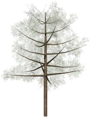

assetNamingInfo / assetNamingInfos functions
Syntax
string assetNamingInfo(filePath, namingAttribute)
string[] assetNamingInfos(filePath, namingAttribute)
Parameters
- filePath (string)
Path to asset. See Asset Search for information about search locations. - namingAttribute (selector)
Specifies asset information.g Group names. m Material names.
Returns
Group names or material names.
assetNamingInfo returns a string list, separated with ";" (also after the last entry).
assetNamingInfos returns a string array.
Description
The functions return names of groups or materials (as a string list or string array), depending on the specified namingAttribute selector.
The order of groups or materials in the string list corresponds to the order given by the indexed component split for groups and materials. In other words, the index of an entry in the string list corresponds to the component index.
Related
- comp operation
- comp attribute
- assetInfo function
- assetMetadata function
- geometry.groups function
- geometry.materials function
Example
|  |
const asset = "Orange_Tree_Model_0.obj"
const mat = assetNamingInfos(asset, m)
Ex1 --> i(asset)
comp(m) { findFirst(mat, "Bark") : Trunk. |
all = Foliage }
Ex2 --> i(asset)
comp(m) { all : [ case mat[comp.index] == "Bark" : Trunk.
else : Foliage ] }
Ex3 --> i(asset)
comp(m) { all : [ case material.name == "Bark" : Trunk.
else : Foliage ] }
Foliage --> set(material.opacity, 0.2)
The component split is used to extract the material with name "Bark". This can be achieved in three different ways. For the used asset the material names are [Foliage,Foliage__leafcard,Bark]. |
Copyright ©2008-2025 Esri R&D Center Zurich. All rights reserved.